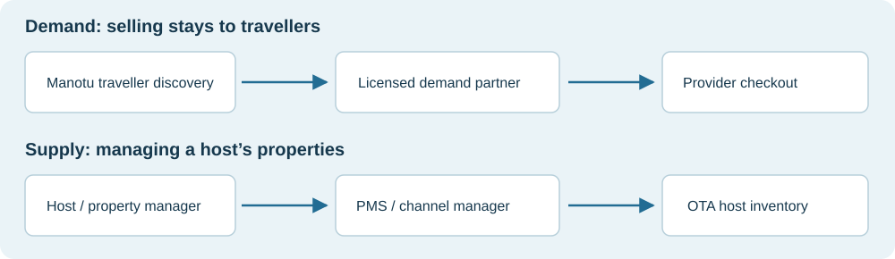
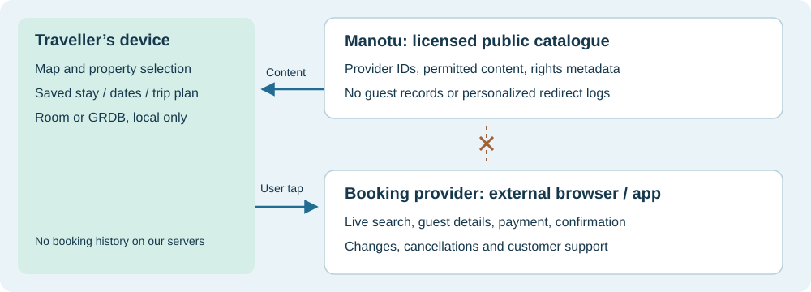
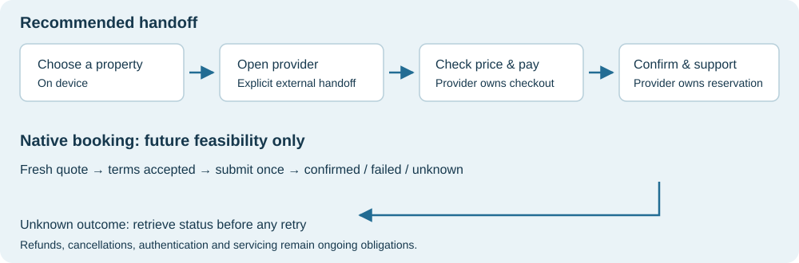

Choose the business model before the API.
An OTA is an online travel agency. Manotu can send travellers to an OTA, display licensed OTA inventory, or operate its own booking experience. Those choices carry different data rights, operational responsibilities and privacy consequences.

Discovery and handoff
Find accommodation near a selected destination. Show public or licensed property information, then open the provider for dates, availability, payment and support. This preserves Manotu’s role as a navigation companion.
Native OTA checkout
Take guest details, submit reservations and manage changes inside Manotu. A conventional backend implementation would need private booking records and would violate the current product rules. Provider-held records and direct client-to-provider flows would need explicit technical and contractual validation.
Evidence level: capabilities below come from official provider documentation. Recommendations, architecture and effort ranges are our assessment. No partner account, contract, production API test, inventory audit or negotiated commission was available for this study.
Airbnb is the difficult part.
No generally available traveller-search and booking feed was established by this research. Airbnb lists software partners serving hosts and property managers. That establishes a host connectivity ecosystem; it does not establish that Manotu can search and resell the entire Airbnb catalogue. [1]
Airbnb’s API terms constrain permitted use, redistribution, building databases and payments, with some exceptions dependent on partner-specific terms. A PMS connection or a host’s permission alone is not proof of marketplace redistribution rights. Obtain written scope covering discovery, display and onward booking before implementation. [2]
| Possible route | What it actually gives us | Decision |
|---|---|---|
| Direct Airbnb partnership | A negotiated scope, if accepted; no access or traveller inventory assumed. | Explore commercially. Keep off the MVP critical path. |
| Host / PMS integration | Authorized operations on participating hosts’ properties; separate rights needed for distribution. | Useful only if we deliberately enter host tooling or contract direct supply. |
| Ordinary outbound link | Open Airbnb in its own app/browser. No imported rate, photo or availability feed. | Possible minimal handoff, subject to link/brand rules; assume zero commission. |
| iCal calendar feed | Blocked dates for connected listings, not a reservation engine or licensed catalogue. | Do not use as proof that a stay is bookable. |
| Scraper / unofficial “Airbnb API” | Data access without demonstrated platform redistribution rights. | Reject as the production source. |
Airbnb prohibits bots and scrapers in its platform rules. Its calendar help says imported calendars refresh automatically every three hours; an unblocked date is therefore not a live, priced offer. [3] [5]
The former Airbnb Associates programme ended on 31 March 2021, according to Airbnb’s official localized notice. Do not build a revenue forecast around old affiliate tutorials. This does not rule out a separately negotiated arrangement today. [4]
Hotel supply offers clearer entry points.
Start one commercial evaluation at a time after initial outreach. API documentation is evidence of a product, not acceptance of Manotu as a partner.
| Provider / route | Documented capability and access | Fit for Manotu |
|---|---|---|
| Booking.com Demand | Content-only, search-and-redirect and native booking models. Managed Affiliate registration, contract and credentials required. [6] [7] | First candidate: licensed property content with provider checkout. Demand access is not automatic with a basic affiliate signup. |
| Agoda demand | Online Affiliates/MSE supports search; Fulfill Assisted places charging and post-booking service with Agoda; Partner Fulfillment puts payments/service with the partner. Commercial onboarding and certification apply. [15] [16] | Parallel candidate: evaluate affiliate handoff and Malaysian coverage. Assisted fulfillment still needs a guest-data-flow review. |
| Expedia Travel Redirect | Redirects to Expedia, Hotels.com or Vrbo. Its onboarding page currently says new API applications are paused. [12] | Watchlist: attractive model, but unavailable as an assumed new-partner launch dependency. |
| Expedia Rapid | Partner application route for integrated lodging shopping, booking and payment; published API reference. [13] [14] | Later: assess if a deeper commerce product is justified. Rapid is distinct from Travel Redirect; the latter’s pause is not evidence that Rapid is closed. |
| HBX / Hotelbeds | Availability, CheckRates where required, bookings, modifications and cancellation; content API and certification workflow. [17] [18] | Later: a B2B booking option, with servicing and commercial obligations to establish. |
| Direct property / licensed PMS supply | Individually contracted public content and an authorized hosted booking link. | Fallback pilot: a small Malaysian property set; labour-intensive onboarding. Do not label this “Airbnb inventory.” |
Material finding: Expedia Travel Redirect’s documented application pause changes the shortlist. Prioritize Booking.com and Agoda discussions; verify Expedia’s intake again before planning an integration. [12]
Booking.com explicitly warns that Demand API inventory and prices may differ from its consumer website/app. Measure actual coverage and offers after approval; do not promise complete inventory or the lowest price. [10] Supply connectivity APIs are a separate product family for property operations. [19]
“Hotel data” is several different licences.
| Data class | Proposed handling | Gate before launch |
|---|---|---|
| Public property facts | Separate supplier catalogue and provider-specific property IDs. Version, source and expiry metadata. | Permission to display names, coordinates, amenities and descriptions; allowed territories and attribution. |
| Photos and reviews | Use only explicitly licensed display modes. Keep provider attribution and takedown capability. | Storage, hotlinking, resizing, offline use, review display and retention rights. |
| Live rates / availability | No durable quote cache. Treat any displayed price as contextual and time-sensitive; follow provider-specific refresh rules. | Dates, occupancy, child ages, currency, taxes, fees, cancellation terms and permitted comparison use. |
| Guest / reservation data | Provider owns checkout and records. Any user-saved confirmation stays local. | No server callback, account linkage, booking warehouse or analytics export into Manotu. |
| OSM accommodation POIs | Navigation/discovery facts with visible OSM attribution; no invented availability. | Keep commercial content separately licensed. Review database-combination obligations before merging datasets. |
Booking.com’s content-only flow supports property information and photos with redirect checkout. Its production checklist instructs partners not to store prices or availability. These are provider-specific rules, not universal cache permissions for every OTA. [8] [9]
Mapping rule: match supplier IDs to public POIs using verified name, address and location, then manually review uncertain matches. A hotel, apartment unit and resort complex can share similar names or coordinates. Keep every supplier’s offer and policy distinct; do not combine a cheap rate from one provider with another’s cancellation terms.
Display rule: show the total stay price, currency, included/excluded charges, room and meal basis, refund deadline and payment timing. Request fresh pricing through the provider’s intended flow. Booking.com documents a structured pricing model and final order pricing; do not reduce it to a nightly teaser. [11]
Keep the journey private by design.
Manotu’s repository rules prohibit storing private places, search history, planned drives and other private user data on its servers. This report extends that constraint to accommodation plans and booking records. It proposes no new privacy exception.

MVP: static content plus external checkout
- Distribute licensed public catalogue content in broad regional bundles where the licence permits. Select and rank nearby stays on-device; do not upload a private route to rank hotels.
- Keep dates, occupancy, saved properties and history in Room / GRDB. Prefer entering booking details on the provider site during the first release.
- Open an allowlisted HTTPS provider URL on a deliberate user tap. Explain that the provider receives the visit and applies its own privacy policy. Never imply anonymity from the OTA.
- No embedded tracking SDKs, pixels, invisible prefetches, per-user affiliate sub-IDs, booking webhooks or server-side click records. A generic partner code still entails external attribution: contract-review it before monetizing.
- Use aggregate financial statements only if the provider can supply them without guest or itinerary records. Do not ingest reservation-level affiliate reports just to calculate revenue.
Live-search gate: server-held API credentials mean a backend proxy may see dates, destination and party details. A stateless proxy is not automatically compliant: access logs, traces, exception payloads, queues and caches can retain them. Keep this outside the initial MVP. Verify the product rules, provider contract and a demonstrably non-retaining design before adding live search; reject any design requiring private server records.
If evaluated later, transmit only the user-selected search area and necessary booking parameters—not GPS history, Home/Work or the route. Disable payload/query logging across the full path, prohibit durable queues, expire in-memory state promptly and use only non-personal service-health metrics. Some supplier request fields may still be incompatible; choose another route rather than weaken the promise.
Let the provider finish the booking.

The handoff is not a reservation. Label the action “Check availability on [provider]”. A returned app session does not prove payment or booking success. Let users manually save a public destination locally for navigation; do not extract a private rental’s exact address from approximate listing coordinates.
Failures the MVP must handle
Expired links should lead to a clear provider-search fallback. Missing property matches should show no booking button. Sold-out dates, price changes, refunds and cancellations remain with the provider. Offline users may view permitted cached public content, but must see that availability requires a connection. Validate the destination host and avoid accepting arbitrary redirect URLs.
If native booking is ever evaluated
Use the supplier’s quote-validation step, present changed terms for acceptance, submit once, then reconcile ambiguous responses through status retrieval before retrying. A timeout is not a failed reservation. Model cancellation quotes and confirmation separately. Payment authentication, fraud, chargebacks, customer support and emergency relocation need named owners.
Hotelbeds, for example, requires CheckRates for offers marked RECHECK; not every supplier uses the same refresh flow. Its certification checks content, vouchers and live readiness. These examples illustrate complexity, not permission to add private booking storage to Manotu. [17] [18]
A small .NET boundary, when access is approved.
Repository finding: the backend already uses .NET 10 SDK-style projects, shared Directory.Build.props and central package management in Directory.Packages.props. The requested MSBuild modernization skill was reviewed; a legacy project migration is unnecessary.
- For licensed public catalogue ingestion, consider a small
Gimano.StaysSDK-style class library or an existing-project module. Keep provider adapters behind a narrow interface. Do not create booking endpoints as part of the research deliverable. - Reuse central package versions, nullable reference types and implicit usings. Use typed HTTP clients and provider-specific DTOs; keep secrets in host configuration. Never ship demand API credentials in Android or iOS binaries.
- The existing shared props use
LangVersion=latestandAnalysisLevel=latest;global.jsonallowslatestFeatureroll-forward from 10.0.100. For a future reproducibility change, choose a tested SDK/roll-forward policy and default or numeric language version deliberately. This report changes none of these files. - Apply timeout budgets, rate limits and circuit breakers. Refresh public content according to licence; expire or remove stale content. Logs contain only provider names, operation names, status classes and coarse timing, never payloads or private search parameters.
- Before implementing any API contract, deliberately update
docs/api.mdanddocs/architecture.mdwith the selected design. Existing mobile contracts remain unchanged by this report.
Verification for an implementation: contract fixtures for content mapping; tests for expiry, invalid links and missing mappings; device checks for handoff and local persistence; and a log/cache/trace inspection proving private fields never persist. Run relevant backend tests and both mobile flows. Test any supplier booking path only in its approved sandbox.
Validate value without tracking travellers.
Commissions, minimum traffic, quotas, payment terms, approval times and Malaysian inventory access remain unconfirmed. A published API is not a commercial quote. Ask for written terms before choosing the primary provider.
Commercial questions
- Are a Malaysian entity and mobile navigation use case eligible? Is metasearch or multi-provider display permitted?
- What is the commission basis, attribution window, cancellation clawback, payout currency and minimum payout?
- Are there setup costs, request fees, quotas, look-to-book limits, minimum volume or exclusivity?
- Can revenue reporting avoid guest, booking and itinerary details?
Operational questions
- Who is merchant of record, who sends the voucher and who answers support at night?
- Which Malaysian destinations, property types and MYR payment methods are actually available?
- What content may be cached offline and for how long? How are removals delivered?
- What consumer, travel-business, tax and privacy obligations apply to the chosen model? Obtain qualified local advice before launch.
Net contribution = completed stays × eligible booking value × effective commission − operating costs
Illustration only: 100 completed stays × RM800 × 3% = RM2,400 gross commission before costs and adjustments. Neither the rate nor the volume is a supplier quote or forecast. Reconcile provider-level aggregate revenue; do not introduce a user funnel to measure it.
Evaluate coverage using a synthetic benchmark: Kuala Lumpur, Penang, Langkawi, Kota Bharu, Johor Bahru, Kota Kinabalu and Kuching; weekday/weekend stays; solo, couple and family searches. Compare final totals, cancellation clarity and link reliability under the same inputs. Do not use real users’ search histories.
A gated route to a useful pilot.
Confirm access and rights
Prepare partner applications for Booking.com and Agoda; ask Airbnb about demand partnerships; check Expedia intake status. Supply a concise product description, expected volume range and privacy boundary. These are proposed next actions—no outreach was sent.
Exit gate: written permission for the exact content, mobile handoff and attribution model. Partner response time is unknown.
Build a local prototype
Use synthetic data or explicitly licensed property content. Add destination-based discovery, external checkout links and local saves. An initial planning allowance is 1–2 engineering weeks, assuming both mobile screens can reuse existing place components.
Exit gate: no private-data network flow and reliable handoff on Android/iOS.
Pilot one licensed provider
Allow roughly 2–4 additional engineering weeks for catalogue ingestion, rights metadata, property matching, link validation and device QA. This is a planning estimate, not a supplier timeline; certification and content approval are excluded.
Exit gate: acceptable synthetic Malaysian coverage, clear pricing handoff, signed terms and operational ownership.
Decide whether live search earns its cost
Only evaluate a live-search adapter after approval of its non-retaining data path. A preliminary 4–8 engineering-week allowance covers provider integration and cross-platform UX; commercial onboarding is separate. Native booking needs a new feasibility and operating-model assessment, not an automatic phase-two commitment.
Decision to take forward
Authorize a partner-feasibility exercise and a privacy-preserving discovery prototype. Do not promise Airbnb catalogue coverage, guaranteed affiliate revenue or in-app booking. The first credible product is: find a stay, book with the provider, navigate with Manotu.
Evidence register
Official provider sources reviewed on 25 October 2026. Public documentation can change; account-specific contracts control actual access and permitted use. Search results were used for discovery, with conclusions grounded in the official pages below. Expedia pages exposed limited text in some views; its onboarding pause was visible in the fetched page.
- Airbnb software partnersHost-facing software ecosystem; not evidence of a traveller inventory licence.
- Airbnb API termsPermitted-use and redistribution restrictions; partner-specific terms matter.
- Airbnb platform termsRestrictions on automated collection and access.
- Airbnb Associates closure noticeOfficial Spanish-language notice: programme ended 31 March 2021. English URL redirected to the help home during research.
- Airbnb calendar syncBlocked-date synchronization and three-hour import refresh.
- Booking.com Demand prerequisitesManaged Affiliate status, signed agreement and credentials.
- Booking.com Demand integration typesContent-only, redirect and native booking models.
- Booking.com content-only flowLicensed content with checkout on Booking.com.
- Booking.com production readinessStatic-data updates, rate limits; do not store prices or availability.
- Booking.com inventory caveatsAPI inventory and prices can differ from consumer channels.
- Booking.com accommodation pricingPrice structure and final booking-price calculation.
- Expedia Travel Redirect onboardingNew API applications explicitly paused when checked.
- Expedia Rapid partnershipApplication route for an integrated lodging booking product.
- Expedia Rapid API referenceLodging API and downloadable specification.
- Agoda demand getting startedAffiliate/MSE, Agoda Fulfill Assisted and Partner Fulfillment models.
- Agoda integration FAQCommercial procedures precede the credentials welcome package.
- HBX / Hotelbeds Booking APIAvailability, conditional CheckRates, booking and cancellation.
- HBX certificationWorkflow, content, vouchers and live readiness requirements.
- Booking.com supply connectivitySupply-side certification, distinct from Demand API.
Local sources and method
AGENTS.md, architecture, privacy promise, and the backend project, shared props, package and SDK files informed the Manotu-specific recommendations. The product API was not modified.
The report uses the requested frontend-design guidance and MSBuild modernization review. The hero was generated with the built-in imagegen tool; diagrams are editable SVG. The exact image prompt and design notes are saved in production-notes.md. This is a research artifact, not a deployed booking integration.